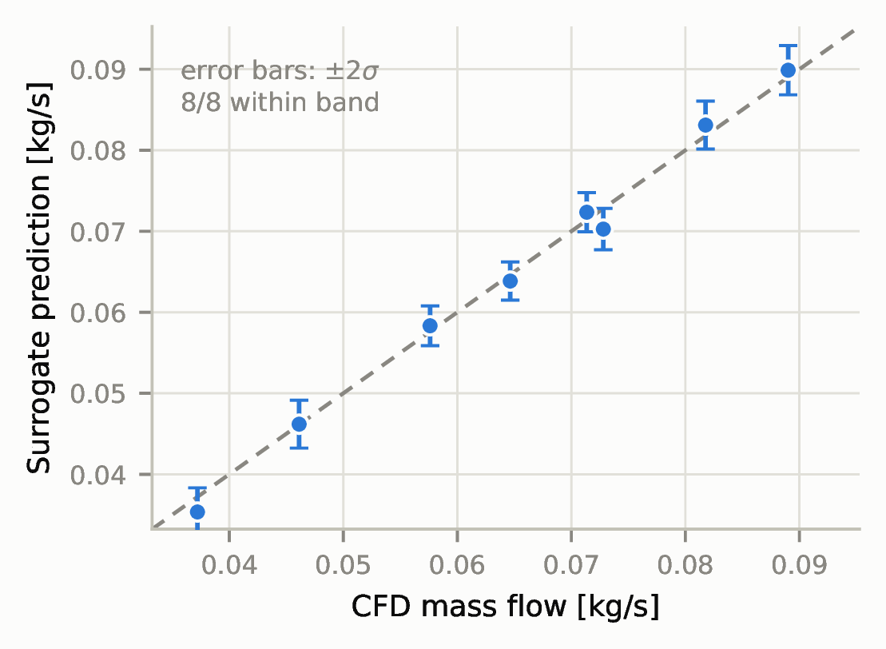
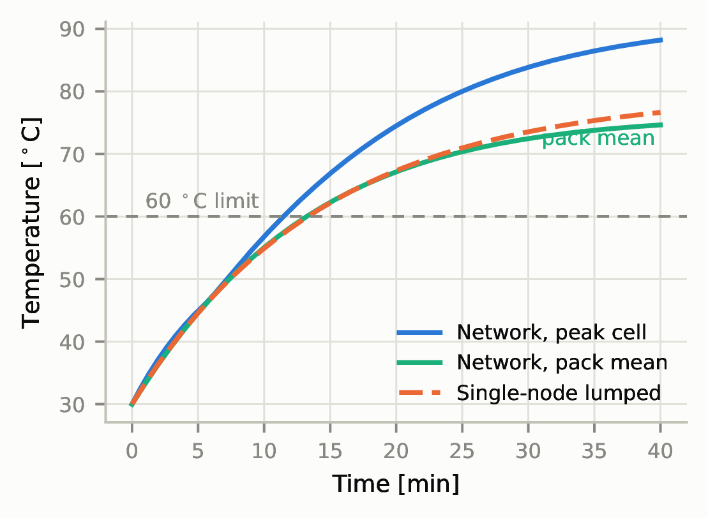
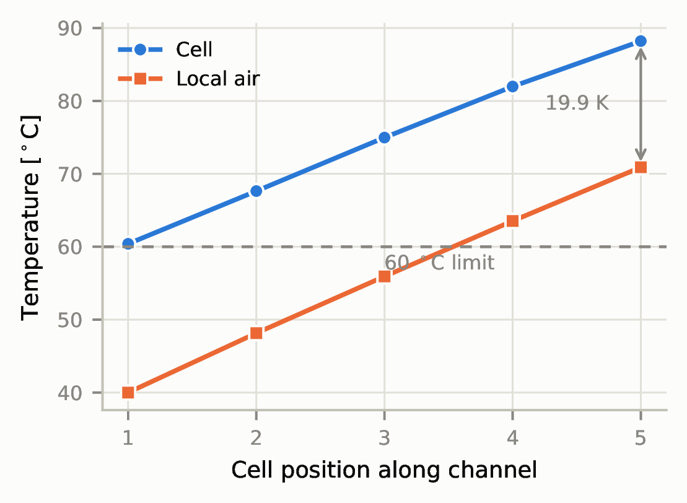
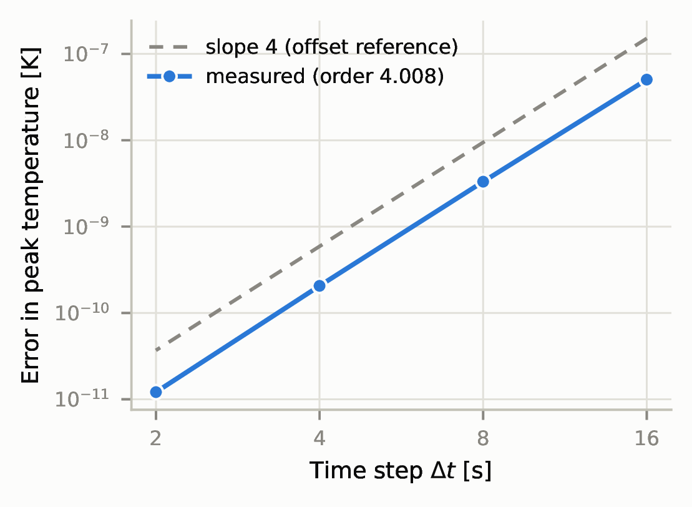
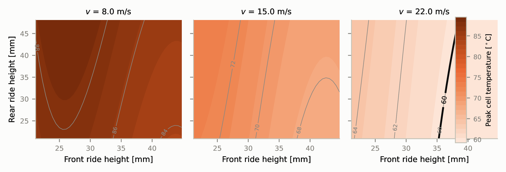
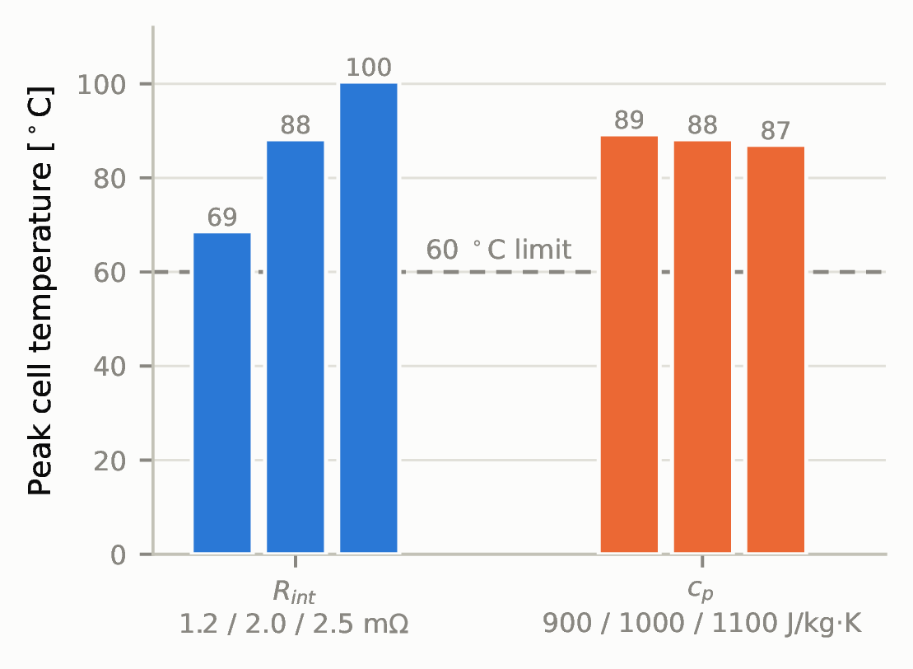

Why a Surrogate?
The M26 sidepod ducting takes its cooling air from the external aerodynamics, so the air reaching the accumulator changes with speed and ride height. Nobody on the team could say by how much. A full-car CFD case takes roughly 6.5 hours on 16 cores and 180 GB of RAM, so a three-variable design space cannot be swept directly — and a steady solution cannot return a transient cell temperature at all.
This project replaces that sweep with a model. It takes the three things a vehicle dynamicist controls — velocity, front ride height and rear ride height — and returns the thing a thermal engineer needs: cell temperatures over a 40-minute endurance event, with an uncertainty attached.
A Two-Stage Model
Stage 1 is a Gaussian process surrogate that maps vehicle attitude to the cooling mass flow captured at the sidepod inlet. Stage 2 is a channel-resolved transient thermal network that converts that mass flow into the temperature of each of the 120 cells. Mass flow is an intermediate quantity, not something the user supplies.
surrogate, metrics, _, _ = fitBoth(loadSweep("data/normalisedSweep.tsv"))
model = AccumulatorModel(
surrogate=surrogate,
cell=CellProperties(), air=AirProperties(), geometry=PackGeometry(),
currentProfile=constantCurrent(73.0), # A per cell, RMS
inletTemperature=313.15, # K
)
result = model.predict(
VehicleCondition(velocity=15.0, frontRideHeight=32.0, rearRideHeight=34.0),
initialTemperature=303.15,
duration=2400.0,
)
result.peakTemperature() # K, hottest of the 120 cells
result.margin(333.15) # K, against the 60 °C rules limitConditions outside the envelope the surrogate was trained on still return a prediction, but it comes back flagged as extrapolated with a warning, so an out-of-range answer cannot be mistaken for a result.
Stage 1: The Mass-Flow Surrogate
The training data is a CFD campaign I designed and ran on the M3 MASSIVE cluster. The design space was sampled with a Latin hypercube over 8.03–21.99 m/s and roughly 20–48 mm of ride height at each axle, with fixed seeds so the run matrix is reproducible. Of 56 cases designed, 34 converged and were used: 26 for fitting and 8 held out. The two groups came from independent seeds, so the split was fixed by the experiment design rather than picked after seeing results.
The model is a Gaussian process with a squared-exponential kernel, one length scale
per input, and an additive white-noise term, fitted in scikit-learn
on standardised inputs by maximising the log marginal likelihood from 8 restarts.
To check that the complexity was earned rather than assumed, 3 simpler baselines
were fitted to the same 26 cases and scored on the same 8.
| Model | RMSE, % of mean | R² |
|---|---|---|
| Linear, velocity only | 6.7 | 0.9299 |
| Linear, all 3 inputs | 4.1 | 0.9738 |
| Quadratic response surface | 2.8 | 0.9877 |
| Gaussian process | 2.1 | 0.9932 |


Two results mattered more than the headline accuracy. First, the fitted length scales are an answer in themselves: velocity and front ride height carry the response, while the rear ride height length scale came out at about 25 times its swept range. The model worked out that rear ride height barely matters without being told, and a separate linear sensitivity check agreed.
Second, the uncertainty is honest about its own limits. The held-out error sits between the fitted noise floor and the scatter between near-identical CFD cases, which is where a model that is not over-fitting should sit. And 8 of 8 inside a 95% band is consistent with good calibration but cannot prove it — at 8 samples the expected count is 7.6, so an over-cautious model would score the same.
Stage 2: The Thermal Network
The pack is modelled as 24 parallel cooling channels, each 5 cells deep, which gives the 120 cells of the 120s1p layout. Each cell is a thermal node with ohmic heat generation, convection to the air in its slot, and conduction to its neighbours through the busbar tabs. The air temperature is marched downstream, so every cell sees air already warmed by the cells in front of it. That produces 120 coupled ordinary differential equations, integrated with classical fourth-order Runge–Kutta at a 2 s step over the 2400 s event.
That downstream march is the reason for resolving channels at all. The single-node lumped model the team currently uses carries one air temperature for the whole pack, and against the network it under-predicts the peak cell temperature by 7 to 12 K. At a 60 °C limit, that is the difference between a design that looks compliant and one that is not.


Verifying the Numerics
Verification asks whether the code solves the equations it claims to, separately from whether those equations describe the pack. Each check compares against something that exists independently of the implementation.
- A single cell with no conduction reduces to a closed-form solution; the integrator matches it to a relative error of 9.6 × 10−10.
- Halving the time step cuts the error 16-fold on the full 120-cell network, an observed order of 4.008 against a theoretical 4.
- Energy generated equals energy removed plus energy stored over the full event, to a relative residual of 1.59 × 10−7.
- The analytical stability limit of 730 s predicts where the explicit scheme actually diverges.

I had assumed the system would be stiff and built a backward Euler solver with Newton iteration for it. Measuring showed the opposite: the stability limit is two orders of magnitude above any step needed for accuracy, and the implicit scheme cost 30.8 times the function evaluations for a less accurate answer. It stays in the repository as the comparison, not as the solver.
What the Model Says About the Car
The thermally limiting condition is low speed, not high. Cooling flow scales almost linearly with velocity, so the worst case across the envelope is 8.03 m/s with the front lowered and the rear raised: a predicted peak of 88.2 °C against the 60 °C rules limit. Only 2 of the 14 conditions evaluated stay under the limit, both at the top of the speed range with the front raised.

The more useful finding is why. At the worst case the air warms by 39.7 K between inlet and outlet, while the cell-to-air temperature gap is only 19.9 K. The pack is limited by how much heat the air can carry away, not by how well heat gets into the air. More surface area or more turbulence would not fix it; more total air would. For the car, that points effort at inlet area, duct losses and fan selection rather than at ride-height setup.
What It Does Not Show
The dominant uncertainty is the cell’s DC internal resistance, which was scaled from the datasheet AC impedance rather than measured. Across its plausible range it moves the predicted peak by 31.8 K, far more than any other assumption tested, so the absolute temperatures should be read as a band rather than a number.

Nothing in the chain has been compared against a measured cell temperature. The thermal network is verified against closed-form solutions and the surrogate is validated against the CFD it was trained on, but that is not experimental validation. The CFD campaign was also run without the cooling package present, so the mass flow is air available at the inlet rather than air delivered through the duct. Measuring the cell resistance and re-running the sweep with the package in place are the next two steps, and neither needs a change to the model.
Built to Be Rerun
The model is an installable Python package, accumulatorThermal,
split so each module does one thing: properties, correlations, heat source, network,
integrators, validation, surrogate, and a composed top-level model. A pytest suite of
8 tests covers the property database and the verification checks above and writes a
JUnit report. The API documentation is generated from the docstrings with
pdoc.
The pipeline from CFD to result is scripted end to end: a seeded sweep generator writes the run matrix, one SLURM job per case runs on the cluster, a post-solve step extracts mass flow from each saved solution, and a normalisation script produces the committed dataset. The extraction reports the measurement plane’s wetted area alongside the mass flow, because a plane that lands inside solid geometry integrates to exactly zero and would otherwise be indistinguishable from no flow.
Raw CFD output is team intellectual property, so the repository commits a non-dimensional dataset and the script that derives it. The surrogate accuracy metrics on this page are scale-free and reproduce from that committed data, and one script regenerates every figure in the report.
Scope: this was an individual university project built on Monash Motorsport’s full-car CFD pipeline, which is the team’s work. The sweep design, extraction, thermal model, verification and report are mine. I wrote the thermal model modules myself; the surrogate and top-level model modules were drafted with AI assistance and adapted by me. The full declaration is in the repository’s AI use log.